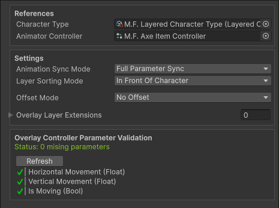

Character Overlay Layers
Character Overlay Layers allow you to add additional spritesheets that are layered above or below a character.
These work on both Unified and Layered Characters.

They are typically used for equipment, armor, or other optional elements for a character.
Overlay Layers use a completely separate spritesheet and Animator Controller.
This is the only instance where a spritesheet does NOT need to be the same size or follow the same layout as the Base Spritesheet.
Overlay Layer Animator Controllers can optionally have their paramters be synced to the parameters of the Character Type Aniamtor Controller during runtime.
This means Overlay Layers can be synced to the character or be animated separately.
When To Use Overlay Layers
Overlay Layers are useful when you need to add additional elements to a charcter without modifying the base character.
Common Use Cases
| Use Case | Example |
|---|---|
| Equipment | Weapons, shields, any helds items |
| Additional Clothing | Armor, helmet |
| Effects | Auras, glow effects |
| Damage/Health Indicators | Scatches, blood, burn marks |
| NPC Identification and Indicators | Quest markers, team colors, enemy highlights |
How Overlay Layers Work
An Overlay Layer is a scriptable object that lives in your assets folder, this asset stores all info needed for an Overlay Layer to be used.
Every Character Overlay Layer contains its own:
- Spritesheet
- Animator Controller
The Animators parameters can be synchronized to the paramters in the Character Type Animator Controller.
This allow the Overlay Layer to be synced to the Charcter or animated on its own.
Setup & Usage
- Character Overlay Layer Configuration - Learn how to create and setup a Character Overlay Layer
- Character Overlay Layer Extensions - Learn how to extend the functionality of a Character Overlay Layer with custom logic.
- Character Overlay Layer Usage - Learn how to apply your Character Overlay Layer to a charactar during runtime.